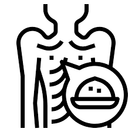

| Region |  | 🔗 | Support | ||
|---|---|---|---|---|---|
| Urban Regions | |||||
|
Colombo Urban capital with rising costs |
15% ⚠️ | ✓ | Learn More | 🆘 NGO Assistance | |
|
Gampaha Urban fringe with moderate access |
12% | ✓ | Learn More | ✅ Govt. Support | |
| Estate Regions | |||||
|
Nuwara Eliya Severe food insecurity zone |
51% ⚠️ | ✗ | Learn More | ❌ No Support | |
|
Badulla Underserved estate sector |
39% | ✗ | Learn More | 🆘 NGO Assistance | |
| Coastal Areas | |||||
|
Trincomalee Mixed food access conditions |
30% | ⚠️ | Learn More | ✅ Govt. Support | |
|
Jaffna Recovery zone with food risks |
27% | ✓ | Learn More | 🆘 NGO Assistance | |
Summary: Estate regions like Nuwara Eliya and Badulla show critical malnutrition rates with little formal support. Urban areas like Colombo and Gampaha are relatively stable but face affordability issues due to inflation. Coastal areas are mixed, with some communities still recovering from economic and environmental pressures.